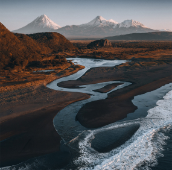
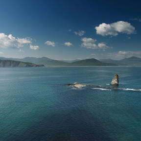
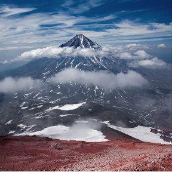

<section class="day-five-six">
  <div class="container">
    
    <div class="day-five">
      <div class="five-text">
        <h1 class="second-title">
          <span class="orange-title">День 5.</span> Морская прогулка к острову
          Старичков
        </h1>
        <p>
          Инструктаж по поведению группы при передвижении на плавсредствах,
          приему таблеток от морской болезни.
        </p>
        <br />
        <p>
          Выезд на причал. Морская прогулка по Авачинской бухте. Осмотр панорамы
          города Петропавловска-Камчатского, Авачинской губы и Авачинского
          залива. Маршрут пролегает мимо бухты Тихая, острова Бабушкин камень,
          мыса Станицкого, камней «Три брата». Увлекательная возможность донной
          рыбалки на терпуга, ленка, камбалу у «Трех братьев», мыса Безымянный,
          у острова Старичков.
        </p>
        <br />
        <p>
          Осмотр птичьих базаров - смешанных колонии кайр, моевок и бакланов.
          Трансфер в гостиницу.
        </p>
        <br />
        <p>Продолжительность 6 часов.</p>
      </div>

      <ul class="list slider-list">
        <li class="slider-item">
          
        </li>
        <li class="slider-item">
          
        </li>
        <li class="slider-item">
          
        </li>
      </ul>
      <div class="btn-section">
        <button type="button" class="btn btn-prv">&larr;</button>
        <button type="button" class="btn btn-next">&rarr;</button>
      </div>
    </div>
    <div class="day-six">
      <div class="day-six-text">
        <h2 class="second-title">
          <span class="orange-title">День 6.</span> Берег Тихого океана,
          экскурсия по городу
        </h2>
        <p>
          Поездка на берег Тихого океана, в район Халактырского пляжа. Прогулка.
          Обед в городе. Обзорная экскурсия по г. Петропавловску-Камчатскому с
          посещением смотровых площадок.
        </p>
        <br />
        <p>Рыбный рынок. Продолжительность -5 часов. Трансфер в гостиницу.</p>
        <p class="additional">Дополнительные услуги</p>
        <ul class="list add-list">
          <li class="add-item">
            <p class="add-list-title">Серфинг</p>
            <p class="add-list-text">
              Прыжки с высоты над водопадом. Записываться заранее.
            </p>
          </li>
          <hr />
          <li class="add-item">
            <p class="add-list-title">SUP борды</p>
            <p class="add-list-text">
              Прыжки с высоты над водопадом. Записываться заранее.
            </p>
          </li>
          <hr />
        </ul>
        <ul class="list slider-list">
          <li class="slider-item">
            
          </li>
          <li class="slider-item">
            
          </li>
          <li class="slider-item">
            
          </li>
        </ul>
        <div class="btn-section">
          <button type="button" class="btn btn-prv">&larr;</button>
          <button type="button" class="btn btn-next">&rarr;</button>
        </div>
      </div>
    </div>
  </div>
</section>
